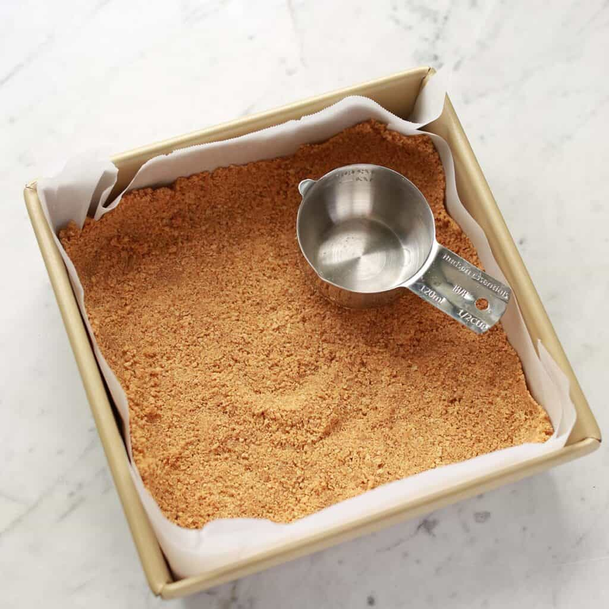
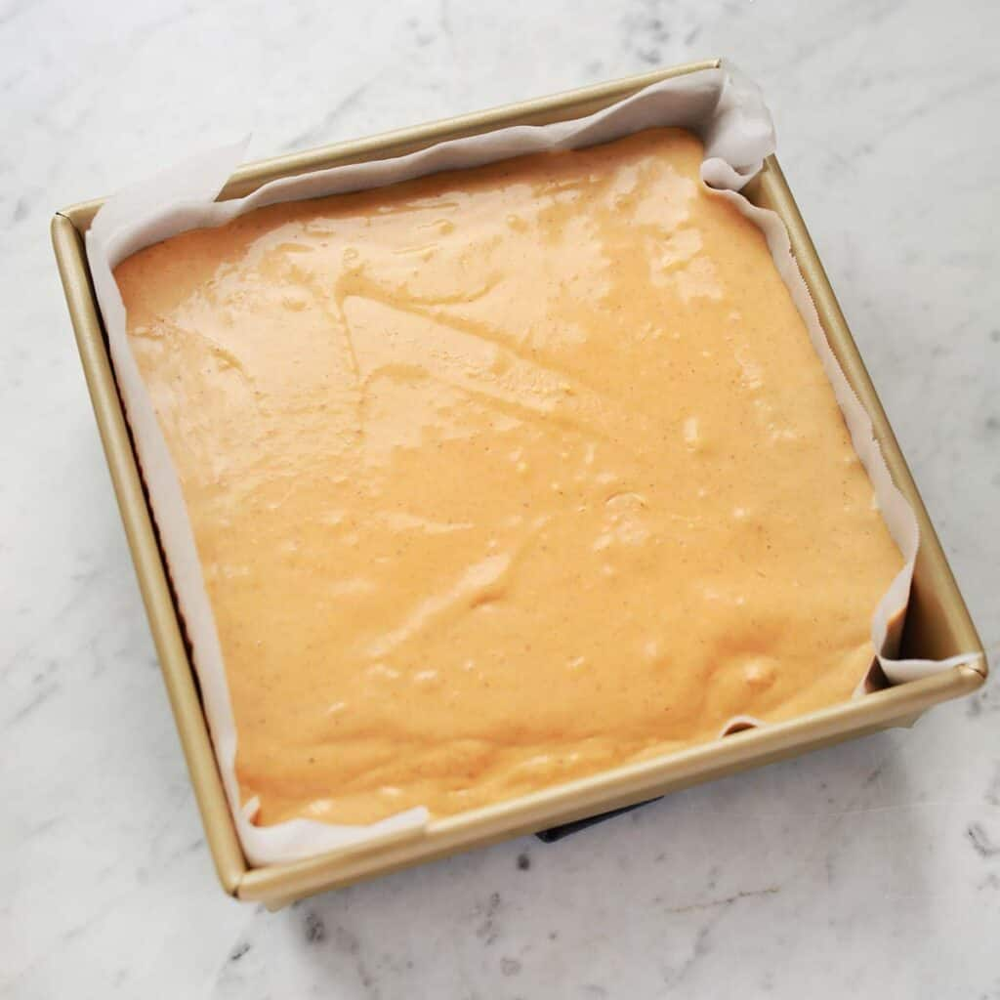

Happy fall, ya'll! I love all things pumpkin but this pumpkin cheesecake recipe really takes the cake. Lol. I've been using this recipe since 2013 because it's simple, easy to make and absolutely delicious. If you are in need of a pumpkin cheesecake recipe this season, this is it!
This pumpkin cheesecake has a graham cracker crust and a thick and creamy cheesecake that is perfectly spiced for the season. This is like if pumpkin pie and cheesecake got together and had an easy-to-bake baby.

Table of Contents
Ingredients
- Graham crackers
- Butter
- Cream cheese
- Granulated white sugar
- Brown sugar
- All-purpose flour
- Vanilla extract
- Pumpkin puree
- Pumpkin pie spice
- Eggs
- Salt
- Whipped Cream (for topping)
How to make Pumpkin Cheesecake
First, make the crusts by grinding up the graham crackers. This is super easy in a food processor. Stir together with the melted butter. Press into your pan lined with parchment paper. Bake at 350°F for 8-10 minutes.
Cream together the softened cream cheese, sugar and brown sugar until smooth. Stir in the flour and pumpkin puree. Stir in the spices, vanilla extract and salt. Now stir in the eggs, one at a time until it is all just combined. Do not overmix this, but watch out for any lumps. Scraping down the sides of the bowl as you can should cut back on those pesky lumps.
Pour batter over the prepared crust. Reduce the oven temperature to 300°F and bake for 1 hour and 10 minutes. Allow to cool and refrigerate until chilled (about 3 hours).
Tips & Substitutions
- I line the square baking pan with one square piece of parchment that is larger than the pan and then I cut slits in each corner. Another option is to line the pan with two pieces of parchment cut into rectangles and overlapping each other in the center.
- Pumpkin puree is not the same as pumpkin pie filling, but the cans look very similar at the grocery store. Pumpkin puree should only have one ingredient: pumpkin.
- To soften cream cheese, I leave it out on my kitchen counter overnight, still in the package. Another option is to microwave it in a microwave-safe container for 30-45 seconds until soft. You want it softened as this will help prevent lumps in your cheesecake.
- This cheesecake will look puffed up after baking, but as it cools it will settle back down.
- If you'd like even more seasonal flavor you could swap the graham crackers for gingerbread or gingersnap cookies. Any dry cookie, like a graham cracker, can work in this recipe.
- You can bake this pumpkin cheesecake recipe in a standard 9-inch springform cheesecake pan if you prefer. Simply reduce the baking time to 1 hour instead of 1 hour and 10 minutes.
- You can store this cheesecake covered in the refrigerator for at least 3 days and likely longer. I would wait to add whipped cream until you are ready to serve. 

Ingredients
- 0.5 cup graham cracker crumbs (24 graham crackers)
- 0.25 cup butter (melted)
- 32 ounces cream cheese (softened)
- 1 cup granulated white sugar
- 0.25 cup brown sugar
- 2 tablespoons all-purpose flour
- 1 cup pumpkin puree
- 1 tablespoon pumpkin pie spice
- 0.5 teaspoon salt
- 4 eggs
Equipment
- 8×8 square baking pan
Step by step
- First, make the crusts by grinding up the graham crackers. This is super easy in a food processor. Stir together with the melted butter.
- Press into your pan lined with parchment paper. Bake at 350°F for 8-10 minutes.
- Cream together the softened cream cheese, sugar and brown sugar until smooth.
- Stir in the flour and pumpkin puree. Stir in the spices, vanilla extract and salt.
- Now stir in the eggs, one at a time until it is all just combined. Do not overmix this, but watch out for any lumps. Scraping down the sides of the bowl as you can should cut back on those pesky lumps.
- Pour batter over the prepared crust. Reduce the oven temperature to 300°F and bake for 1 hour and 10 minutes.
- Allow to cool and refrigerate until chilled (about 3 hours).
Notes
I line the square baking pan with one square piece of parchment that is larger than the pan and then I cut slits in each corner. Another option is to line the pan with two pieces of parchment cut into rectangles and overlapping each other in the center.
To soften cream cheese, I leave it out on my kitchen counter overnight, still in the package. Another option is to microwave it in a microwave-safe container for 30-45 seconds until soft. You want it softened as this will help prevent lumps in your cheesecake.
This cheesecake will look puffed up after baking, but as it cools it will settle back down.
You can bake this pumpkin cheesecake recipe in a standard 9-inch springform cheesecake pan if you prefer. Simply reduce the baking time to 1 hour instead of 1 hour and 10 minutes.
You can store this cheesecake covered in the refrigerator for at least 3 days and likely longer. I would wait to add whipped cream until you are ready to serve.

Comments (5)
Jessica Wells | October 1, 2024
Love it! I've been trying out a few of your recipes, and your guide made it so much easier.
Ryan Luvert | September 18, 2024
Your blog is amazing. Love to see more!
Alexander Brett | September 15, 2024
Great content! Would love to see more Recipes.
Leave a Comment